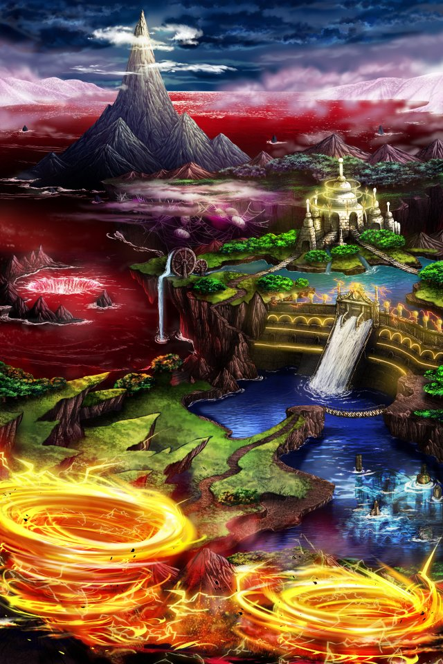

Shou-chan……新たな地ファル・ナーガへの道を開いておいたよ。
……Shou-chanここからは不思議な力を感じるの。
凄く強くて怖い力なのになぜかよく知っているような力を……。
Shou-chanならきっとこの意味がわかるよね……。
私は何もできないけど信じてるから……。
だってShou-chanは私の大切な召喚師だもんね……。


パリス
このファル・ナーガには 竜に関する様々な伝承が残っているの。
パリス
この地を支配する魔神も、おそらく竜に 関係する存在だと推測できるけれど
パリス
ただ、このファル・ナーガも含め、 イシュグリアの探索も残りわずか。
パリス
カルナ・マスタの問題もあるけれど、 まずはティリス様の復活を目指しましょう。
パリス
今の私が自分で決めたってはっきり 言えるのはそれくらいだし……。
パリス
さあ、行きましょう。 この先でセリアが待っているはずよ。